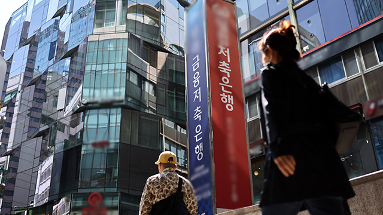
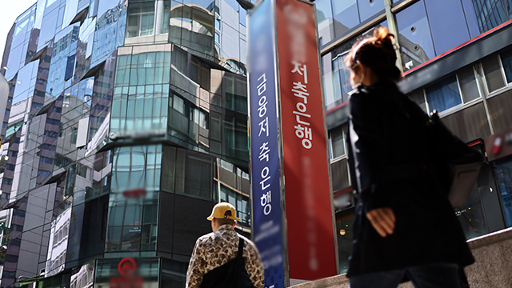

주씨 측은 A교사에게 피해학생의 학부모에게 선처를 구해달라거나 합의의 자리를 마련해달라 요청했는데 이 과정에서 교사가 퇴근한 이 후인 저녁 8시 또는 명절 연휴 등에 연락을 취한 사실이 드러났다.
 

최근 교사의 권리 보장을 위해 업무 시간 외 연락을 금지하는 내용을 명문화 해야 한다는 목소리가 높아지는 사회적 분위기에서 주씨 측 행동 은 ‘갑질’로 비춰진다는 비판적인 목소리도 제기됐다.
한편 주씨 측은 28일 수원지법 형사9단독 곽용헌 판사 심리로 진행된 특수교사 A씨의 아동학대 혐의 3차 공판에서 피해 부모 및 장애아동을 둔 부모들의 탄원서와 유아특수교육학 교수의 의견서 등을 재판부에 제출했으나, 재판부는 “필요시 검찰 통해 증거로 제출해달라”며 이를 모두 반환했다.
주씨는 A교사에 대한 처벌불원 탄원서를 제출하겠다고 밝힌 바 있다.